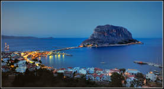
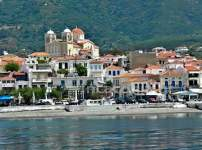
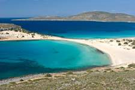
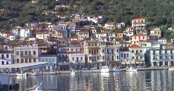
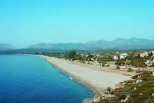
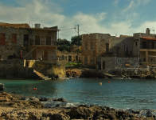
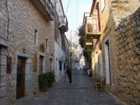
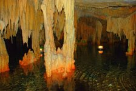
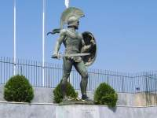
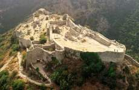

Area of interest and nearby popular destinations
Monemvasia

Monemvasia (Greek: Μονεμβασία) is a town and a municipality in Laconia,
Greece. The town is located on a small peninsula off the east coast of
the Peloponnese. The peninsula is linked to the mainland by a short
causeway 200m in length. Its area consists mostly of a large plateau
some 100 metres above sea level, up to 300 m wide and 1 km long, the
site of a powerful medieval fortress. The town walls and many Byzantine
churches remain from the mediaeval period. The seat of the municipality
is the town Molaoi.
source
{kind=link}
Neapoli

Neapoli (Greek: Νεάπολη meaning "new city") is the largest town of the
former municipality. It was initially an agricultural center, but now
has seen a rise in the numbers of tourists (particularly visitors to
the neighbouring island of Elafonisos). The commercial center of the
town is located on the water front, facing Vatika Bay. There are
ferries to the islands Kythira and Elafonisos. The town is surrounded
by the villages of Faraklo, Paradisi and Lachi in its hinterland, and
Kambo located on the same plain as Neapoli.
source
{kind=link}
Elafonisos island

Elafonissos is a very small island, just 19 square Km, on the Southern
Eastern Tip of Peloponesse. The distance from the mainland is a mere
570 meters of crystal clear water on top of thin white sand.
source
{kind=link}
Gytheio

Gytheio (Greek: Γύθειο, [ˈʝiθio]), the ancient Gythium or Gytheion
(Ancient Greek: Γύθειον), is a town and a former municipality in
Laconia, Peloponnese, Greece. Since the 2011 local government reform it
is part of the municipality East Mani, of which it is a municipal
unit.[1] It was the seaport of Sparta, some 40 km north. Gytheio used
to be an important port until it was destroyed in 4th century AD,
possibly by an earthquake. Today it is the largest and most important
town in Mani. It is also the seat of the municipality of East Mani.
source
{kind=link}
Mavrovouni

Mavrovouni is a village in the Mani Peninsula, Greece, south of
Gytheio. It is located on a steep hill of dark rock and is a place for
summer vacations. The village's economy is based on olive oil
production, fishing and tourism.
It
is located right above the Mavrovouni beach, a place ideal for swimming
and known for its size which is approximatelly 4 km in length. Campings
and several rooms-to-let can be found by the beach within 50-100 meters
from the sea. The place is appropriate for wind-surfing having strong
winds blowing for several hours in the day (12:00-6:30) during the
summer full season (July - August).
source
{kind=link}
Gerolimenas

Gerolimenas (Greek: Γερολιμένας), also Yerolimenas, is a picturesque
small coastal village at the southern end of the Mani Peninsula, in the
prefecture of Laconia, in the Peloponnese, Greece. Τhe name, which
means "Old Harbour", is thought to derive from the ancient "ΙερόςΛιμήν"
(Ieros Limen), meaning "Sacred Harbor". One of the remotest settlements
in the Peloponnese, until the 1970s it was reached mainlyby boat. In
the past it was a major fishing center, and featured substantial
infrastructure such as a shipyard, ice supplies, and a fish market.
Today the main industry is tourism. Αccording to the 2001 census its
population was 55 inhabitants.
source
{kind=link}
Aeropoli

Areopoli (Greek: Αρεόπολη) is a town on the Mani Peninsula, Laconia,
Greece. The word Areopoli means "city of Ares", the ancient Greek god
of war. It was the seat of Oitylo municipality. Areopoli was called
Tsimova by the invading Slavs during the 7th century AD. The Greek War
of Independence was started at Areopoli on the 17th of March 1821 by
Petros Pierrakos, also known as Petros Mavromichalis, the last bey of
Mani. Now Areopoli has grown into a flourishing town. Limeni is its
port.
source
{kind=link}
Dyros

Driving south from Areopoli, it is 8 Km to the village of Pirgos Dirou,
where the road forks off to the underground caves. The caves are 4Km
further on from the main village, set beside the sea and a small beach
(first picture). Glifada Caves are well-lit and crammed with
stalactites where reflections are remarkable. Alepotrypa Caves are huge
chambers in which excavations have unearthed evidence of prehistoric
occupation. The caves are among the most important natural sites in
Greece and with great archaeological significance.
source
{kind=link}
Sparta

Sparti (Greek: Σπάρτη) is a municipality of Laconia, Greece. It lies at
the site of ancient Sparta. The population in 2001 was 38,079, of whom
15,828 lived in the town itself.
http://en.wikipedia.org/wiki/Sparti_(municipality)
source
{kind=link}
Mystras

Mystras (Greek: Μυστράς, Μυζηθράς, Myzithras in the Chronicle of the
Morea) is a fortified town and a former municipality in Laconia,
Peloponnese, Greece. Situated on Mt. Taygetos, near ancient Sparta, it
served as the capital of the Byzantine Despotate of the Morea in the
14th and 15th centuries, experiencing a period of prosperity and
cultural flowering. The site remained inhabited throughout the Ottoman
period, when it was mistaken by Western travellers for ancient Sparta.
In the 1830s, it was abandoned and the new town of Sparti was built,
approximately eight kilometres to the east.
source
{kind=link}